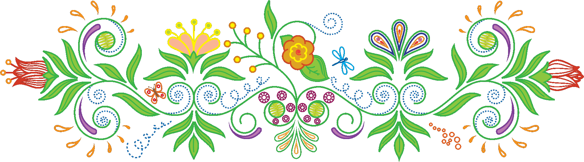

学者ピタゴラスによって研究されていた「数秘学」 という学問から始まり、
宗教の儀式にも使われるなどして広まった「数秘術」が元になっています。
生年月日やお名前を数字化し、あなたの才能・資質/見た目/満足感/使命など
いいところをたくさん見つけます！
数字は全世界共通、そこに「色」をプラスすることで数字の意味をより
感覚的に分かりやすくしたものが数秘&カラーです。
数秘から導かれた結果を「占い・与えられ変えられないもの・受身的なもの」ではなく…
＜＜自分を知るためのツール！！＞＞
是非自分のことを知り、更なる無限の可能性を広げて下さい♪
数字は１〜９と１１、２２の全部で１１の数字で判断します。
生年月日からあなたの性質・資質・才能＝ライフパスを
発見しましょう！
ライフパスは人格の５５％を占めると言われてます。
こんにちは。
harako(ハラコ)と申します。
数秘＆カラーは2015年末に師匠と出会い、
お勉強は2016年の春頃から始めました。
数秘＆カラーは自分を見つめるきっかけとなりました。
自分の幸せに気づくことができ、自信も出てきて、
子育ても楽しくなりました。たくさんの方に、
私と同じように、自分の内なる才能を知ってもらい、「私でいいんだ！」と
どんな自分でも自信をと持って人生を楽しんでもらいたいと思ってます。
子育ての悩みも解消されるので、ぜひ、楽しんで見てください。